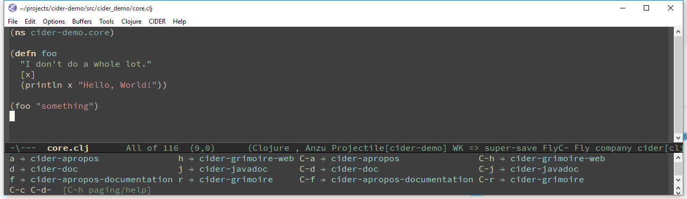

Using cider-mode
cider-mode is a pretty standard Emacs minor mode, which exists mostly to provide a
common keymap for all of CIDER’s REPL-powered commands that are meant to be used
from Clojure(Script) source buffers.
There you’ll find commands for evaluation, code and documentation lookup, debugging and other related functionality. This mode is the very heart of CIDER and it’s important to master it, so you can be productive.
Enabling cider-mode
cider-mode is normally enabled automatically when you start CIDER, but you can also enable it explicitly for Clojure(Script) buffers like this:
(add-hook 'clojure-mode-hook #'cider-mode)
There’s no need to enable it explicitly for modes derived from clojure-mode like clojurescript-mode.
|
Disabling cider-mode
cider-mode is normally disabled automatically when you quit CIDER, but you can also disable it in any buffer explicitly by typing M-x cider-mode (provided it’s already enabled in that buffer).
Basic Workflow
Typically you’d begin your interaction with any source buffer by evaluating it with C-c C-k. Afterwards you’d normally evaluate just individual forms with C-c C-e (evaluate preceding form) or C-c C-c (evaluate current top-level form).
From time to time some evaluation would take forever and you’d interrupt it with C-c C-b.
Jumping between source files and the REPL is as easy as pressing C-c C-z. If you invoke the command with a C-u prefix, while in a source buffer, it will also change the namespace of the REPL buffer to match that of the source buffer.
It’s also highly likely that you’d look up some definition with M-. or some documentation with C-c C-d C-d.
| Definition and documentation lookup commands work with both Java and Clojure. |
If you’re struggling to remember the name of some var you need, cider-apropos (C-c C-d a or C-c C-d C-a)
and cider-apropos-documentation (C-c C-d f or C-c C-d C-f) will help you find vars matching some string.
cider-mode also provides you with code completion that works out-of-the-box and requires no extra setup and eldoc integration.
Those few essential commands can get you really far in your day to day work. Keep on reading for a lot more information!
Key Reference
Here’s a list of the key bindings of cider-mode:
| Command | Keyboard shortcut | Description |
|---|---|---|
|
C-x C-e |
Evaluate the form preceding point and display the result in the echo area and/or in an buffer overlay (according to |
|
C-c C-v w |
Evaluate the form preceding point and replace it with its result. |
|
C-c M-e |
Evaluate the form preceding point and output it result to the REPL buffer. If invoked with a prefix argument, takes you to the REPL buffer after being invoked. |
|
C-c M-p |
Load the form preceding point in the REPL buffer. |
|
C-u C-c M-p |
Load the form preceding point in the REPL buffer and eval. |
|
C-c C-v C-f e |
Evaluate the form preceding point and pretty-print the result in a popup buffer. If invoked with a prefix argument, insert the result into the current buffer as a comment. |
|
C-c C-v C-f d |
Evaluate the top level form under point and pretty-print the result in a popup buffer. If invoked with a prefix argument, insert the result into the current buffer as a comment. |
|
C-M-x |
Evaluate the top level form under point and display the result in the echo area. |
|
C-c C-v l |
Evaluate the list around point. |
|
C-c C-v v |
Evaluate the form around point. |
|
C-u C-M-x |
Debug the top level form under point and walk through its evaluation |
|
C-c C-v z |
Evaluate the preceding top-level form up to the point. |
|
C-c C-v r |
Evaluate the region and display the result in the echo area. |
|
C-c C-b |
Interrupt any pending evaluations. |
|
C-c C-m |
Invoke |
|
C-c M-m |
Invoke |
|
C-c C-v n |
Eval the ns form. If invoked with a prefix argument, undefine all vars and aliases in the ns first. |
|
C-c M-n (M-)n |
Switch the namespace of the REPL buffer to the namespace of the current buffer. |
|
C-c C-z |
Switch to the relevant REPL buffer. Use a prefix argument to change the namespace of the REPL buffer to match the currently visited source file. |
|
C-u C-u C-c C-z |
Switch to the REPL buffer based on a user prompt for a directory. |
|
C-c M-z |
Load (eval) the current buffer and switch to the relevant REPL buffer. Use a prefix argument to change the namespace of the REPL buffer to match the currently visited source file. |
|
C-c M-d |
Display default REPL connection details, including project directory name, buffer namespace, host and port. |
|
C-c C-o |
Clear the last output in the REPL buffer. With a prefix argument it will clear the entire REPL buffer, leaving only a prompt. Useful if you’re running the REPL buffer in a side by side buffer. |
|
C-c C-k |
Load (eval) the current buffer. If invoked with a prefix argument, undefine all vars and aliases in the ns before loading. |
|
C-c C-l |
Load (eval) a Clojure file. If invoked with a prefix argument, undefine all vars and aliases in the ns before loading. |
|
C-c C-M-l |
Load (eval) all Clojure files below a directory. If invoked with a prefix argument, undefine all vars and aliases in each file before loading. |
|
C-c M-n (M-)r |
Reload all modified files on the classpath. If invoked with a prefix argument, reload all files on the classpath. If invoked with a double prefix argument, clear the state of the namespace tracker before reloading. |
|
C-c C-d d |
Display doc string for the symbol at point. If invoked with a prefix argument it inverts the value of |
|
C-c C-d j |
Display JavaDoc (in your default browser) for the symbol at point. If invoked with a prefix argument it inverts the value of |
|
C-c C-d c |
Lookup symbol in ClojureDocs. If invoked with a prefix argument it inverts the value of |
|
C-c C-d w |
Open the ClojureDocs documentation for symbol in a web browser. If invoked with a prefix argument it inverts the value of |
|
C-c C-d a |
Apropos search for functions/vars. |
|
C-c C-d f |
Apropos search for documentation. |
|
C-c C-d e |
Apropos search for documentation & select. |
|
C-c M-i |
Inspect expression. Will act on expression at point if present. |
|
C-c M-t v |
Toggle var tracing. If invoked with a prefix argument it inverts the value of |
|
C-c M-t n |
Toggle namespace tracing. |
|
C-c C-u |
Undefine a symbol. If invoked with a prefix argument it inverts the value of |
|
C-c C-M-u |
Undefine all symbols and aliases in the namespace. |
|
C-c C-t t |
Run test at point. |
|
C-c C-t a |
Re-run the last test you ran. |
|
C-c C-t n |
Run tests for current namespace. |
|
C-c C-t l |
Run tests for all loaded namespaces. |
|
C-c C-t p |
Run tests for all project namespaces. This loads the additional namespaces. |
|
C-c C-t r |
Re-run test failures/errors. |
|
C-c C-t b |
Show the test report buffer. |
|
M-. |
Jump to the definition of a symbol. If invoked with a prefix argument it inverts the value of |
|
mouse-5 or mouse-9 |
Jump to the definition of a symbol using mouse. |
|
mouse-4 or mouse-8 |
Jump back to where |
|
C-c M-. |
Jump to the resource referenced by the string at point. |
|
C-c C-. |
Jump to some namespace on the classpath. |
|
C-c C-? r |
Display function usages across loaded namespaces in a dedicated buffer. |
|
C-c C-? C-r |
Display function usages across loaded namespaces in a minibuffer selector. |
|
C-c C-? d |
Display function deps (other functions used by it) in a dedicated buffer. |
|
C-c C-? C-d |
Display function deps (other functions used by it) in a minibuffer selector. |
|
M-, |
Return to your pre-jump location. |
|
M-TAB |
Complete the symbol at point. |
|
C-c C-q |
Quit the current nREPL connection. |
|
There’s no need to memorize this list. If you’re in a Clojure buffer with 
An even better solution would be to install which-key, which will automatically show you a list of available keybindings as you start typing some keys. This will simplify your interactions with CIDER quite a lot, especially in the beginning. Here’s what you’d see if you typed C-c C-d in a Clojure buffer:

|